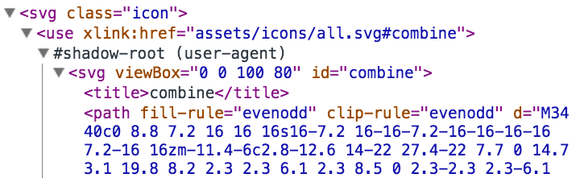

Web icon
pain killer
An modern approach to handling icons in web frontends
Mario Volke / JavaScript UserGroup Munich / 8. January 2015
We are a web agency offering full stack web application development.
Why talking about this in a JavaScript user group
- Icons are everywhere
- You need workflows in your team that work for everyone
- You need to define a workflow for your icons, too
First of all
Stop
using icon fonts!
To be more precise
If you are on IE9+ stop using icon fonts!
Why?
Because Chris Coyier says so...
Icon fonts have problems
- Workflow integration is complex
- Aliasing and sharpness is different in each browser/system
- Positioning icon fonts is hard
- If your font doesn’t load you’ll see ugly characters
- It is againts HTML semantics and accessibility
Inline SVG
<div class="somewhere-in-your-markup">
<svg style="width: 100px; height: 100px;"
viewBox="0 0 100 100"
enable-background="new 0 0 100 100">
<path d="M50,97.137c-1.402,0-2.786-0.371-4-1.072L12.106,76.497c-2.467-1.424-4-4.079-4-6.928V30.432c0-2.849,1.533-5.504,4-6.928 L46,3.935c2.429-1.402,5.571-1.402,8,0l33.894,19.568c2.467,1.424,4,4.079,4,6.928v39.137c0,2.849-1.533,5.504-4,6.928L54,96.065 C52.786,96.766,51.402,97.137,50,97.137z M50,6.863c-0.701,0-1.393,0.185-2,0.536L14.106,26.967c-1.234,0.712-2,2.04-2,3.464v39.137 c0,1.425,0.766,2.752,2,3.464L48,92.601c1.215,0.701,2.785,0.701,4,0l33.894-19.568c1.234-0.712,2-2.04,2-3.464V30.432 c0-1.425-0.766-2.752-2-3.464L52,7.399C51.393,7.048,50.701,6.863,50,6.863z"/>
<rect x="40.115" y="48.379"
transform="matrix(-0.7071 0.7071 -0.7071 -0.7071 135.5746 44.8431)"
width="36.77" height="4.243"/>
<rect x="29.808" y="51.879"
transform="matrix(-0.7071 -0.7071 0.7071 -0.7071 28.3934 119.7609)"
width="18.385" height="4.243"/>
</svg>
</div>
Just use <use>
includes existing SVG symbols
<div style="width: 0; height: 0; visibility: hidden;">
<svg>
<symbol id="some-icon">...</symbol>
</svg>
</div>
<svg><use xlink:href="#some-icon" /></svg>
Attention: Chrome only supports symbols which come before its usage in the DOM order
Building an SVG spritemap with
grunt-svgstore
grunt.initConfig({
svgstore: {
options: {},
default : {
files: {
'dest/icons.svg': ['svgs/*.svg'],
},
},
},
});
Then inline dest/icons.svg into the top of <body>
There is also gulp-svgstore.
You can <use> URLs, too
<svg><use xlink:href="assets/icons.svg#some-icon" /></svg>
Pros: Only one request for all icons,
icons.svg cached by browser
But: No IE support at all!
There’s a polyfill for Internet Explorer
svg4everybody
Our grunt workflow
- Folder with SVG icons
- grunt-svgmin (because Adobe Illustrator exports a lot of crap)
- grunt-svgstore
- and svg4everybody
Accessibility
Within a spritemap, each symbol can have a <title>
<symbol id="some-icon"><title>Some icon</title><path etc.../></symbol>
Give the <svg> a title
<svg title="Some icon"><use xlink:href="icons.svg#some-icon"></use></svg>
ARIA roles
If your icon just decorates other content:
<a href="..."><svg role="presentation"><use xlink:href="icons.svg#twitter"></svg>
Find us on Twitter
</a>
Or if it stands for itself:
<a href="..."><svg title="Find us on Twitter" role="img">
<use xlink:href="icons.svg#twitter">
</svg></a>
Coloring icons
#inline-styled-svg {
fill: #66cc33;
}
Styling limits
Symbols are embedded as Shadow DOM elements.
There is no cross browser compatible way of selecting child elements of a Shadow DOM element, yet.
CSS Trick: currentColor
.icon {
fill: currentColor;
}
All icons then inherit the current text color.
Works in all modern browsers and IE9+.
CSS Trick (2): Multi-color icons
<symbol id="multicolor-icon"
viewBox="0 0 100 100"
enable-background="new 0 0 100 100">
<path .../>
<rect style="fill: currentColor;" .../>
<rect style="fill: currentColor;" .../>
</symbol>
<svg style="fill: #66cc33; color: #333333;"><use xlink:href="#multicolor-icon" /></svg>
Use a combination of currentColor and fill.
</end>
Questions?
by Mario Volke